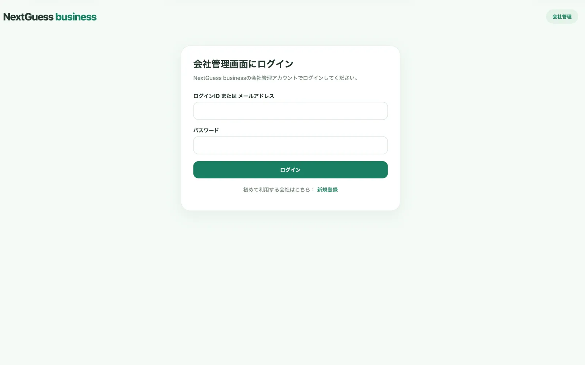
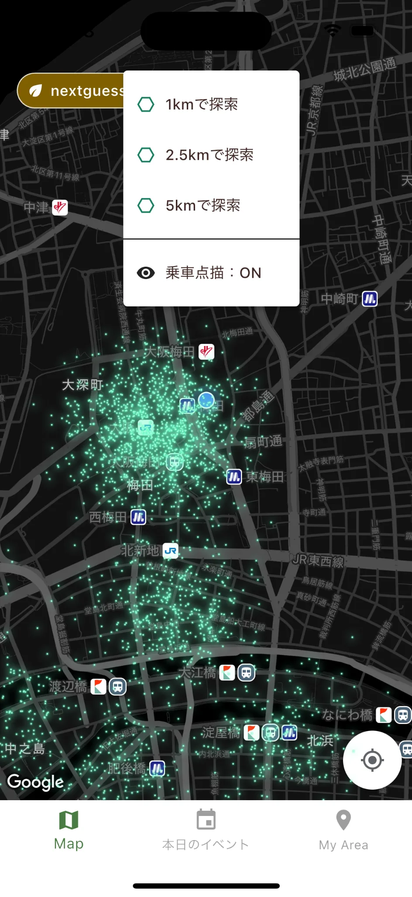

NEXTGUESS BUSINESS / PRODUCT DEMO
会社のデータを、
現場の選択肢に。
登録・管理・配信は会社用Webから。点描・探索はドライバーアプリから。ひとつの乗車データを双方で参照し、情報を実際の判断につなげる仕組みです。
実際の画面を見る ↓01 / COMPANY WEBCSVを登録し、

CSVを登録し、
まとめて管理。
デモ環境では大阪A区域の3年分・47,863件の乗車実績を登録。CSV管理画面から登録済みファイルと取込件数を確認できます。
開発用デモデータによる実画面。47,863件はこのデモ環境での実績件数であり、導入企業の実績を示すものではありません。
02 / DATA REVIEW乗車実績を、

乗車実績を、
抽出・並び替え。
日時、運賃、配車区分といった条件を使ってデータを確認。必要な部分に絞って検証できるWeb上の閲覧機能です。
03 / DELIVERY SETTINGS届ける相手と、

届ける相手と、
条件を選ぶ。
会社全体または指定したドライバーへ、公開範囲と対象条件を設定。公開中の設定と下書きを分けて管理します。
04 / DRIVER APP点描とHEXで、


点描とHEXで、
分布を見つける。
ドライバーアプリ側は、同じ公開済み乗車データを参照。乗車点描と、1km・2.5km・5kmのHEX探索を重ねて確認できます。これは現場の判断材料であり、将来の乗車を保証する予測ではありません。
05 / ACCOUNT & ACCESS管理する人と、
管理する人と、
使う人を分ける。
会社管理Webにログインしてデータを管理し、所属するドライバーがアプリで確認します。デモ用アカウントと画面を用いた紹介です。

